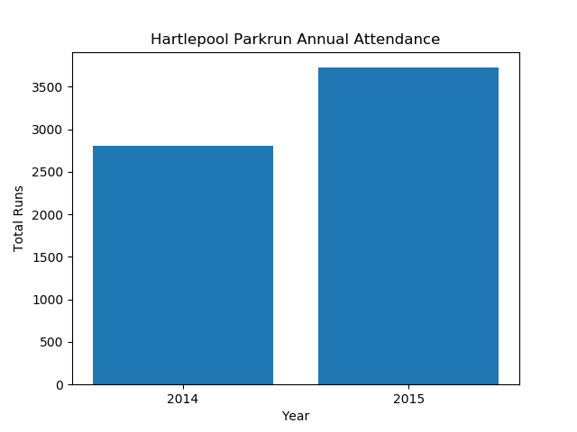
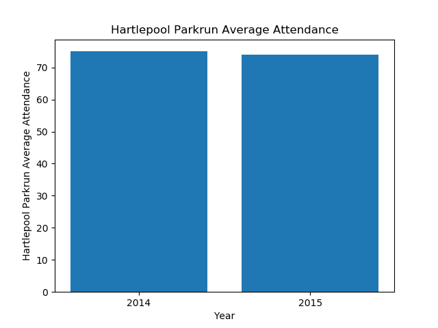
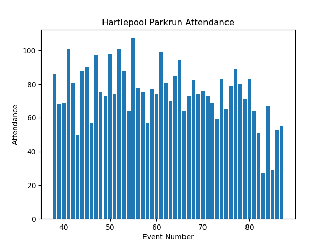
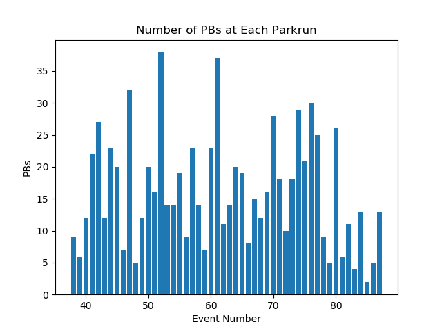
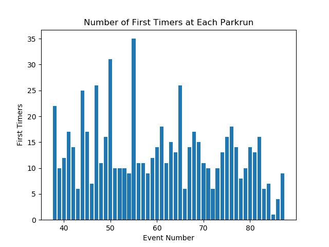

Annual Summary for Hartlepool-Rossmere Parkrun
Annual Attendance
| Year | Number of Events | Average Attendance | Number of Runs | Number of Volunteers | Number of PBs | Number of First Timers |
|---|
| 2014 | 37 | 75 | 2806 | 443 | 722 | 933 |
| 2015 | 50 | 74 | 3723 | 538 | 809 | 666 |


Statistics for Events between 01/01/2015 and 31/12/2015
Max Attendance = 107, Min Attendance = 27



Top Participants
Top Volunteers
Total number of volunteering events
| Name | Number of Runs | Number of Volunteers |
|---|
| 1 | Roy WATKINS | 1 | 40 |
| 2 | Michael WALLER | 0 | 37 |
| 3 | Gillian WALLER | 2 | 35 |
| 4 | Susan MCKENNA | 8 | 26 |
| 5 | Yasmin SMITH | 8 | 21 |
| 6 | Caroline BELL | 12 | 18 |
| 7 | Hannah WILLIAMS | 7 | 18 |
| 8 | Heidi MORRISON | 7 | 18 |
| 9 | Mick SKIRVING | 33 | 16 |
| 10 | Gaynor BRISCOE | 31 | 15 |
| 11 | Leisa SMITH | 25 | 13 |
Most Runs
Total Number of Runs in the period
| Name | Number of Runs | Number of Volunteers |
|---|
| 1 | Lee KITCHING | 39 | 0 |
| 2 | Graham JONES | 36 | 6 |
| 3 | Paul SIMPSON | 36 | 0 |
| 4 | Michael BOLSTER | 35 | 1 |
| 5 | Mick SKIRVING | 33 | 16 |
| 6 | Simon LAWLOR | 33 | 1 |
| 7 | Linda KELLY | 32 | 0 |
| 8 | Phil HOLBROOK | 32 | 0 |
| 9 | Chris BOOTHMAN | 31 | 8 |
| 10 | Gaynor BRISCOE | 31 | 15 |
Time on Feet
Total time spent running in the period.
| Name | Time on Feet (hours) |
|---|
| 1 | Linda KELLY | 19.5 |
| 2 | Gaynor BRISCOE | 18.1 |
| 3 | Radha VENKATESAN | 17.4 |
| 4 | Phil HOLBROOK | 17.1 |
| 5 | Mick SKIRVING | 16.3 |
| 6 | Gill LAMB | 15.3 |
| 7 | Leisa SMITH | 14.9 |
| 8 | Lynn BLACKETT | 14.4 |
| 9 | Michael BOLSTER | 14.3 |
| 10 | Kenneth STRINGER | 14.3 |
Keenest
Total Participation (run + volunteer). Note: Running and volunteering on the same day counts.
| Name | Number of Runs | Number of Volunteers | Total |
|---|
| 1 | Mick SKIRVING | 33 | 16 | 49 |
| 2 | Gaynor BRISCOE | 31 | 15 | 46 |
| 3 | Graham JONES | 36 | 6 | 42 |
| 4 | Roy WATKINS | 1 | 40 | 41 |
| 5 | Ruth NEWTON | 29 | 12 | 41 |
| 6 | Chris BOOTHMAN | 31 | 8 | 39 |
| 7 | Lee KITCHING | 39 | 0 | 39 |
| 8 | Leisa SMITH | 25 | 13 | 38 |
| 9 | Gillian WALLER | 2 | 35 | 37 |
| 10 | Michael WALLER | 0 | 37 | 37 |
Consistency
Smallest variation (standard deviation) in run times.
| Name | Run Time SD (sec) | Number of Runs |
|---|
| 1 | Chris BOOTHMAN | 15.4 | 27 |
| 2 | David SKEET | 18.8 | 12 |
| 3 | Lee KITCHING | 23.7 | 39 |
| 4 | Jonathan FOSTER | 25.0 | 12 |
| 5 | Keith HUTCHINSON | 25.3 | 10 |
| 6 | Graham JONES | 26.8 | 28 |
| 7 | Gill BORTHWICK | 27.1 | 15 |
| 8 | Jeffrey HOPE | 27.9 | 14 |
| 9 | Colin CLOSE | 29.1 | 14 |
| 10 | James WINDRAM | 30.9 | 25 |